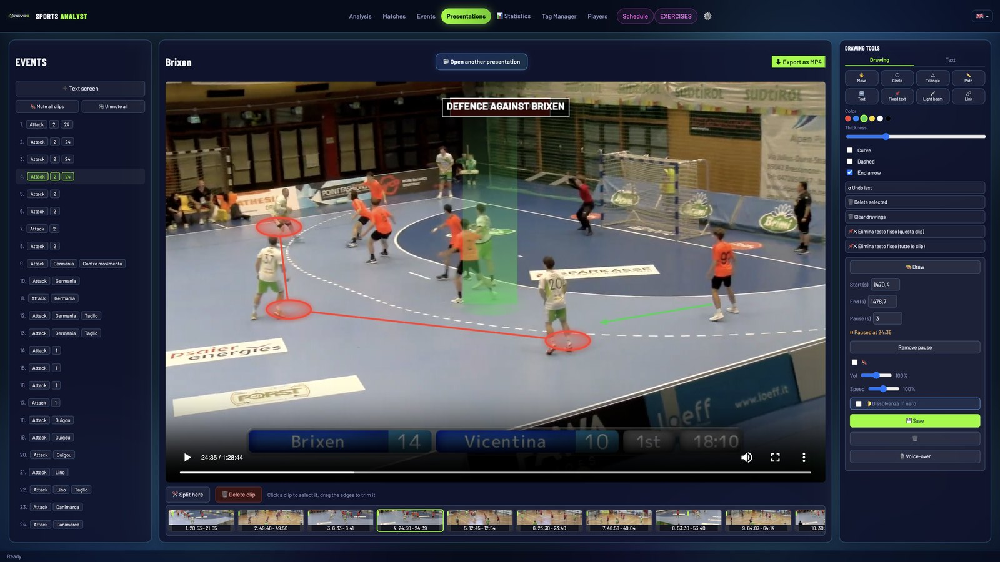
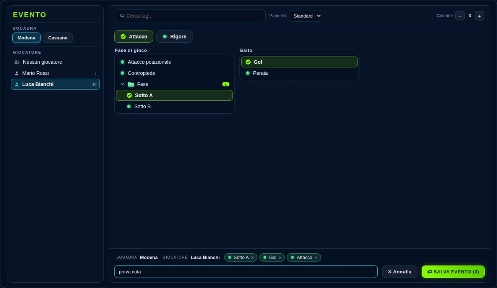
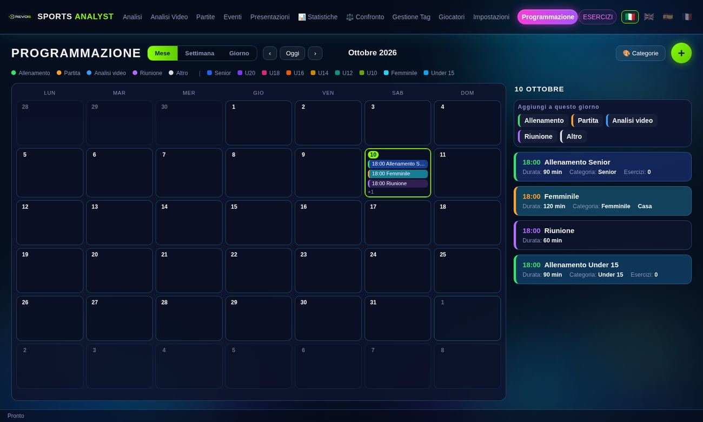
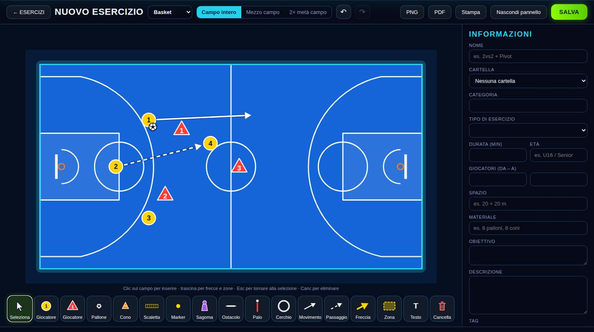
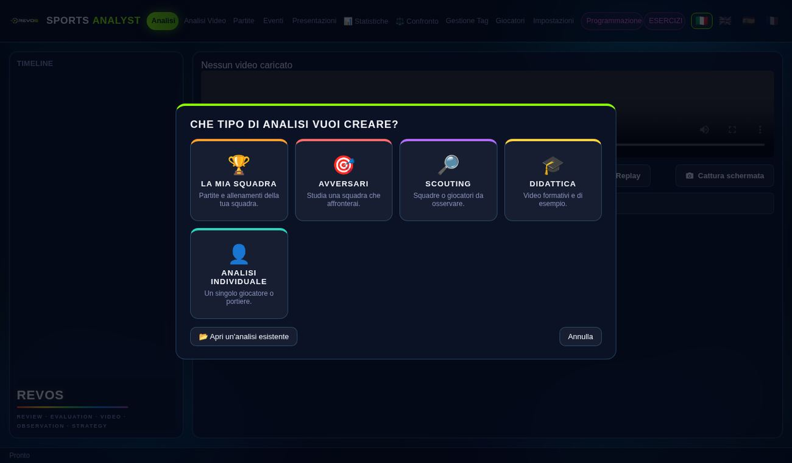
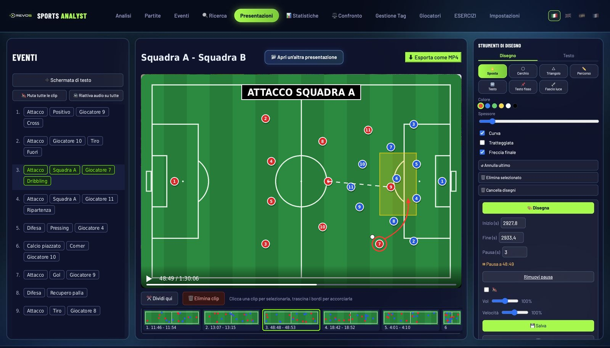

Every action tagged. Every match understood.
Professional video analysis for coaches and teams.
AnalyseTagFindDrawReportPresentImprove
Analyze matches, tag every action, find key clips, draw on video, create tactical reports and share video analysis with your team.
30-day free trial · launch price €169/year · Italiano, English, Español, Français, Deutsch, Português, Hrvatski, Polski

Open the match video from your computer or paste the YouTube link.
Tag actions with two keys and the tag panel you built yourself.
Filter by tag, player or match and get the clips straight away.
Draw on the video: circles, arrows, zones, text and spotlight.
Turn your analysis into a report with notes, clips and statistics.
Present it to the team or send the videos to your players' phones.
All the tags for your category are right in front of you, grouped by folder and in columns. No menus to open while the match runs.

Every tagged action becomes searchable video: no more minutes lost scrubbing back and forth through the match.
Turn your analysis into a clear, professional report to share with your staff or players.
Trainings, matches, meetings and video analysis in one place: see the month, the week or the day and give every category its own colour.

Draw the drill on the court, save it in a folder and find it again when you plan training.

Choose whose analysis it is and REVOS opens the right panel. Then find everything by category, presentations included.

The same analysis workflow, adapted to the language, fields and equipment of every sport.

Matches, trainings, opponents and scouting, each with its own tag panel.
All the match events in a list: filter, fix a wrong tag, delete.
Find any action in an instant with a combination of tags, in one match or in all of them.
Circles, arrows, zones, text and spotlight right on the clips.
Assemble clips into a presentation with tactical drawings and voice-over, to show your team.
Notes, clips and statistics in a PDF to share with your staff.
Shooting, defense and goalkeeper percentages calculated from the tags. Export to Excel or PDF.
Compare matches, teams and players to see where to improve.
Rosters and archive, with quick import from a CSV file.
Videos on your players' phones with the REVOS Player app, even at a scheduled date and time.
Tactics board with the fields and equipment of every sport, in a folder library.
Calendar of trainings, matches and meetings for every category.
Open the match file on your computer or paste the YouTube link: start tagging right away, with replay and 5-second skip.
The interface speaks your staff's language and switches with one click.
Complete match analysis and team reports.
Fast tagging, clips and advanced video analysis.
Prepares presentations and tactical sessions.
Gets personal videos and feedback in the REVOS Player app.
Organises players, age groups, trainings and drills.
An incredibly useful tool that I can no longer do without, both for video analysis and for creating and storing drills for my athletes, young and old. Thanks to how fast I can work, I even have more free time!
With Revos Analyst, video analysis becomes intuitive, in-depth, precise and fast. It's the ultimate tool for every modern coach!
A tool that lets us split up the work and make it faster and more precise. Great video analysis features, direct contact with the athletes through the program – in short, everything we coaches need in a single tool.
I needed a video analysis program different from the one I was using: it had to be smoother and have what I needed as a coach. I first built it for myself, but then, thanks to the help of other colleagues, I improved it day after day, and now I can share it – above all, at a price everyone can afford.
Start your 30-day free trial and discover a complete sports video analysis platform for your team. Analyze matches, create clips, prepare reports and share insights with your players.
One installation for Mac, Windows and Linux. Updates arrive on their own with every new version.
€169/year after the free trial.
sudo apt install ./Revos-Analyst-*.deb